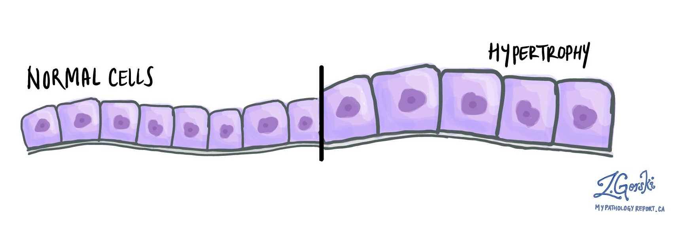

¿Cómo Funciona la Hipertrofia Muscular?

La hipertrofia muscular se refiere al aumento del tamaño de las fibras musculares a través del ejercicio y la nutrición. Este proceso ocurre cuando las fibras musculares se someten a un esfuerzo intenso, lo que provoca microlesiones en las fibras.
Posteriormente, durante el periodo de recuperación, el cuerpo repara estas microlesiones mediante un proceso biológico complejo que involucra la fusión de células satélite a las fibras musculares dañadas, resultando en fibras más grandes y fuertes.
Este mecanismo de adaptación es la forma en que nuestro cuerpo se prepara para manejar mejor futuras demandas similares de ejercicio.
Factores que Afectan la Hipertrofia
Entrenamiento
Debe ser progresivo y centrado en ejercicios de resistencia como levantamiento de pesas, que desafíen los músculos. El principio de sobrecarga progresiva es fundamental - gradualmente aumentar el peso, volumen o intensidad para continuar desafiando los músculos.
Nutrición
La proteína es crucial para la reparación muscular (1.6-2.2g por kg de peso corporal), mientras que los carbohidratos proveen energía para los entrenamientos intensos. Las grasas saludables son esenciales para la producción hormonal.
Recuperación
El descanso adecuado (7-9 horas de sueño) permite la reparación de las fibras musculares. Cada grupo muscular necesita 48-72 horas de recuperación entre sesiones intensas para optimizar el crecimiento.

La Importancia del Equilibrio en la Hipertrofia

Para que el proceso de hipertrofia sea efectivo, es esencial mantener un equilibrio entre el entrenamiento, la nutrición y el descanso. Estos tres pilares trabajan en sinergia:
- El entrenamiento proporciona el estímulo para el crecimiento
- La nutrición suministra los materiales de construcción
- El descanso permite que ocurra el proceso de reconstrucción
Un enfoque equilibrado es clave para evitar el sobreentrenamiento (que puede llevar a lesiones o estancamiento) y maximizar los resultados a largo plazo. La paciencia y consistencia son virtudes esenciales en el camino hacia la hipertrofia muscular sostenible.